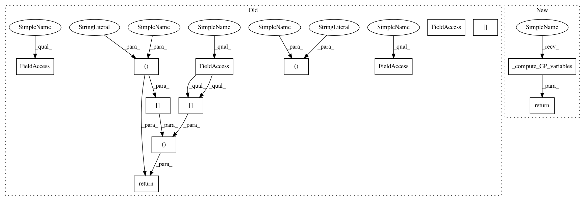

ec89c4efc300b7e3e5622c6cd018d6fe7deda55b,GPy/inference/EP.py,Full,fit_EP,#Full#,60
Before Change
mu_ = v_/tau_
self.tau_ = np.empty(self.N,dtype=float)
self.v_ = np.empty(self.N,dtype=float)
//Initial values - Marginal moments
z = np.empty(self.N,dtype=float)
self.Z_hat = np.empty(self.N,dtype=float)
phi = np.empty(self.N,dtype=float)
mu_hat = np.empty(self.N,dtype=float)
sigma2_hat = np.empty(self.N,dtype=float)
//Approximation
epsilon_np1 = self.epsilon + 1.
epsilon_np2 = self.epsilon + 1.
self.iterations = 0
self.np1 = [self.tau_tilde.copy()]
self.np2 = [self.v_tilde.copy()]
while epsilon_np1 > self.epsilon or epsilon_np2 > self.epsilon:
update_order = np.arange(self.N)
random.shuffle(update_order)
for i in update_order:
//Cavity distribution parameters
self.tau_[i] = 1./self.Sigma[i,i] - self.eta*self.tau_tilde[i]
self.v_[i] = self.mu[i]/self.Sigma[i,i] - self.eta*self.v_tilde[i]
//Marginal moments
self.Z_hat[i], mu_hat[i], sigma2_hat[i] = self.likelihood.moments_match(i,self.tau_[i],self.v_[i])
//Site parameters update
Delta_tau = self.delta/self.eta*(1./sigma2_hat[i] - 1./self.Sigma[i,i])
Delta_v = self.delta/self.eta*(mu_hat[i]/sigma2_hat[i] - self.mu[i]/self.Sigma[i,i])
self.tau_tilde[i] = self.tau_tilde[i] + Delta_tau
self.v_tilde[i] = self.v_tilde[i] + Delta_v
//Posterior distribution parameters update
si=self.Sigma[:,i].reshape(self.N,1)
self.Sigma = self.Sigma - Delta_tau/(1.+ Delta_tau*self.Sigma[i,i])*np.dot(si,si.T)
self.mu = np.dot(self.Sigma,self.v_tilde)
self.iterations += 1
//Sigma recomptutation with Cholesky decompositon
Sroot_tilde_K = np.sqrt(self.tau_tilde)[:,None]*(self.K)
B = np.eye(self.N) + np.sqrt(self.tau_tilde)[None,:]*Sroot_tilde_K
L = jitchol(B)
V,info = linalg.flapack.dtrtrs(L,Sroot_tilde_K,lower=1)
self.Sigma = self.K - np.dot(V.T,V)
self.mu = np.dot(self.Sigma,self.v_tilde)
epsilon_np1 = sum((self.tau_tilde-self.np1[-1])**2)/self.N
epsilon_np2 = sum((self.v_tilde-self.np2[-1])**2)/self.N
self.np1.append(self.tau_tilde.copy())
self.np2.append(self.v_tilde.copy())
//Variables to be called from GP
mu_tilde = self.v_tilde/self.tau_tilde //When calling EP, this variable is used instead of Y in the GP model
sigma_sum = 1./self.tau_ + 1./self.tau_tilde
mu_diff_2 = (self.v_/self.tau_ - mu_tilde)**2
Z_ep = np.sum(np.log(self.Z_hat)) + 0.5*np.sum(np.log(sigma_sum)) + 0.5*np.sum(mu_diff_2/sigma_sum) //Normalization constant
return self.tau_tilde[:,None], mu_tilde[:,None], Z_ep
class DTC(EP):
def fit_EP(self):
After Change
self.np1.append(self.tau_tilde.copy())
self.np2.append(self.v_tilde.copy())
return self._compute_GP_variables()
class DTC(EP):
def fit_EP(self):
In pattern: SUPERPATTERN
Frequency: 3
Non-data size: 13
Instances
Project Name: SheffieldML/GPy
Commit Name: ec89c4efc300b7e3e5622c6cd018d6fe7deda55b
Time: 2013-01-29
Author: acq11ra@sheffield.ac.uk
File Name: GPy/inference/EP.py
Class Name: Full
Method Name: fit_EP
Project Name: SheffieldML/GPy
Commit Name: ec89c4efc300b7e3e5622c6cd018d6fe7deda55b
Time: 2013-01-29
Author: acq11ra@sheffield.ac.uk
File Name: GPy/inference/EP.py
Class Name: DTC
Method Name: fit_EP
Project Name: SheffieldML/GPy
Commit Name: ec89c4efc300b7e3e5622c6cd018d6fe7deda55b
Time: 2013-01-29
Author: acq11ra@sheffield.ac.uk
File Name: GPy/inference/EP.py
Class Name: FITC
Method Name: fit_EP
Project Name: SheffieldML/GPy
Commit Name: ec89c4efc300b7e3e5622c6cd018d6fe7deda55b
Time: 2013-01-29
Author: acq11ra@sheffield.ac.uk
File Name: GPy/inference/EP.py
Class Name: Full
Method Name: fit_EP